Merck Medical Portal
Responsive webHealthcare
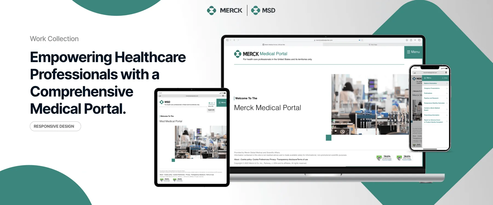
About the project
One trusted place for medical information.
Merck needed one place where healthcare professionals in the US could find medical information, congress materials and storage guidance, and reach medical experts quickly.
Over 12 months I worked as product designer and prototyper on the portal, from interviews and personas to site map, wireframes, high-fidelity screens and usability testing, across desktop, tablet and phone.
- Role
- Product Designer,
Prototyper - Duration
- 12 months
- Platform
- Web, tablet, mobile
- Client
- Merck · MSD
Scattered information was slowing care down.
Overview
Problem
Fragmented access to medical information held back healthcare professionals, industry stakeholders and patients. Getting crucial temperature stability data took 20% longer than it should, which put patient safety at risk.
Outcome
The Merck Medical Portal cut task completion time by 95% and reinforced Merck’s position in accessible, compliant pharmaceutical solutions.
Team
Linda Weiss, Mary Kitchner, Phani Kumar, Christine Nealis, Joseph Kushnerick, Kavita Marichetty, Stella Smith, Amy Shah-George, Viswanath Korlepara, Akshitha Takur and me.
Understanding the problem.
Research
To build a nuanced picture within the timeframe, the team took a data analysis approach that could surface insights quickly.
Early findings showed that many users struggled to reach critical medical information digitally, which pointed to the need for one central platform. A breakdown of digital channels also showed gaps in access between user groups, so the portal had to work across the channels each group already used.
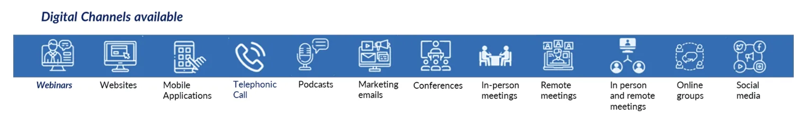
Three main insights.
Key findings
Our data scientists built a predictive model for advanced pharmaceutical information. Combing through it revealed three main insights.
- 1
Partial information
Professionals lacked complete information for handling medical products, which affected their ability to make informed decisions.
- 2
Ambiguous details
Presentations and publications were hard to find in one coherent place, a fragmentation problem in information retrieval.
- 3
Challenging process
Information was scattered across many websites, which slowed professionals down.
Opportunity
How might we streamline healthcare professionals’ access to complete medical information and simplify medical product management?
Understanding our user.
Proto-persona
Next, we defined who we were designing for. The data pointed to a healthcare professional in Texas who wants a simple way to stay informed and keep products safe, and who needs a platform to explore presentations and publications as part of her continuing education.
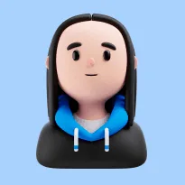
Healthcare professional
Dr. Maria Rodriguez
Texas, United States
“As a forward-thinking practitioner, I see technology as a tool to improve patient care.”
Bio
A healthcare professional with over 15 years of experience who contributes to medical advances through clinical trials and research. Tech-savvy and forward-thinking, she keeps up with industry trends.
Needs
- Up-to-date medical information and congress materials
- A quick way to report adverse events
- Immediate temperature stability guidance
- Efficient exploration of pipelines and research
Pain points
- Hard to find relevant presentations and sources
- Cumbersome research into pipelines
- No immediate temperature stability guidance
- Current systems lack a fast reporting route
Attitudes
Patient-centric, innovative and safety-focused, with an emphasis on continuous learning and collaboration.
Explaining our user’s perspective.
User stories
User stories explain in plain English what something does and why it matters. With Dr. Rodriguez in mind, we chose three to develop.
“I need one streamlined platform for current medical information, so I don’t have to search multiple sources.”
A single hub for instant access to current medical information.
“I need a temperature stability calculator to make sure medications are stored correctly.”
A Temperature Stability Calculator built into the portal, removing uncertainty about storage.
“I just need a simple way to report medication issues, to keep my patients safe.”
A smooth reporting flow and direct access to Merck medical experts.
Building out the experience.
Project plan
With the user stories in place, we planned interviews and a detailed project plan to understand stakeholder perspectives, requirements and potential challenges. The plan became our roadmap.
Understand
Understand how HCPs and HBPs access medical information, support and education.
- One-to-one and group interviews with HCPs
- Create user persona
- Document current and future process flows
- Workshops to agree the future state
Design
Plan the human-centred design process and deliverables.
- Sketch wireframes
- High-fidelity wireframes
- Design the MVP
- User journey site map
- Information architecture
- Navigation structure
Testing
Run usability testing to validate design decisions.
- Design and run test cases
- Implement fixes
- Roll out a practice test site
- Accessibility check against WCAG
Go live
Provide ongoing support and training.
- Create the user guide
- Manage department adoption with stakeholders
- Tailored demos and training
Managing stakeholder expectations throughout
Prioritising what to build.
Feature listing
Stakeholder engagement and interview insights from the Understand phase gave us a long list of features. We mapped each one by business value and complexity to decide what to build first.
Structuring the portal.
Site map
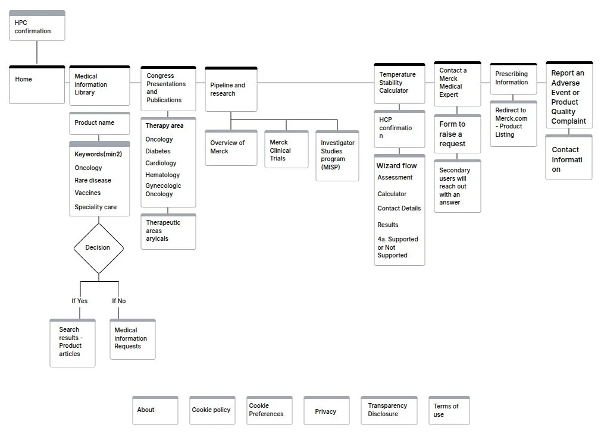
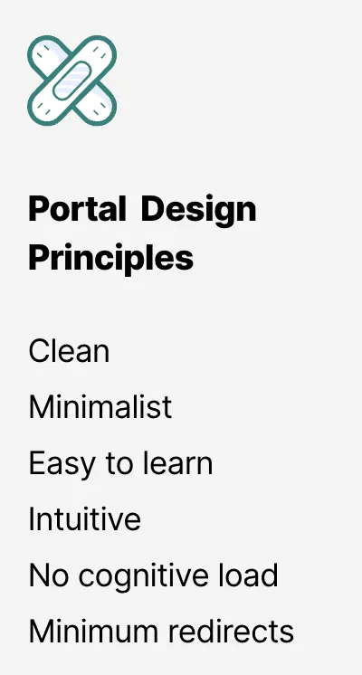
Imagine a portal designed just for you, where vital information is easy to reach and tailored to your needs. These principles kept every screen clean, minimal and quick to learn.
Medical information, congress presentations and publications.
Solution · Story 1
Medical information: fast access to current medical insights in one central hub.
Congress presentations: curated presentations keep professionals up to date with research and trends.
Publications: quick retrieval of medical literature.
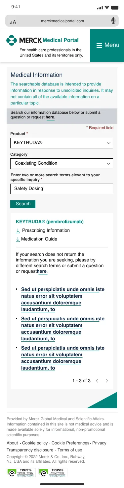
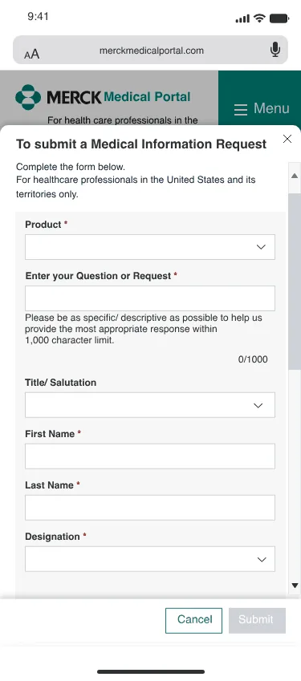
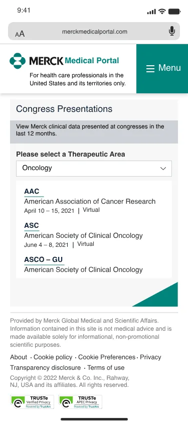
Drag or scroll sideways
Temperature Stability Calculator.
Solution · Story 2
A dedicated calculator guides professionals through assessment, exposure times and contact details to a clear supported or not supported outcome, so storage decisions are never guesswork.
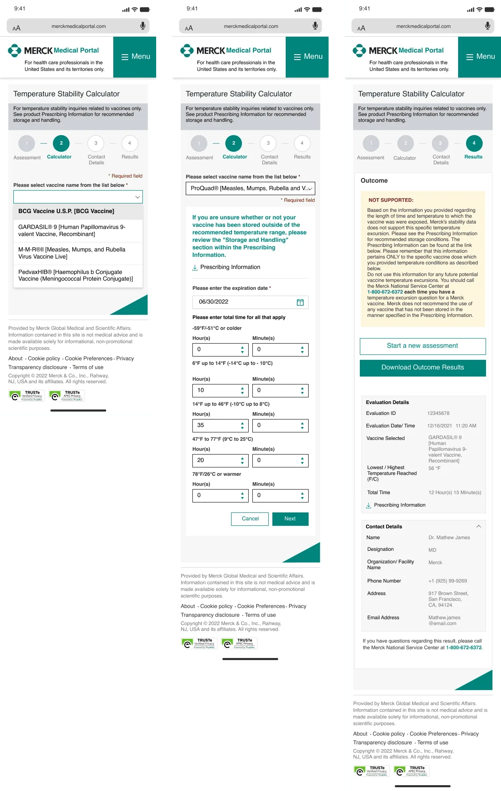
Contact an expert, report an adverse event.
Solution · Story 3
Contact a Merck medical expert: a direct route to personalised support.
Report an adverse event or product quality complaint: a simple reporting path that supports patient safety.
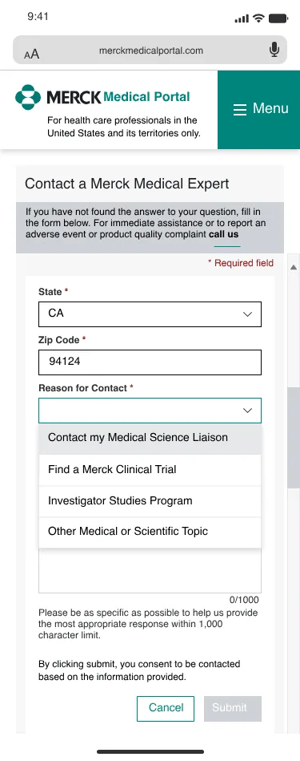
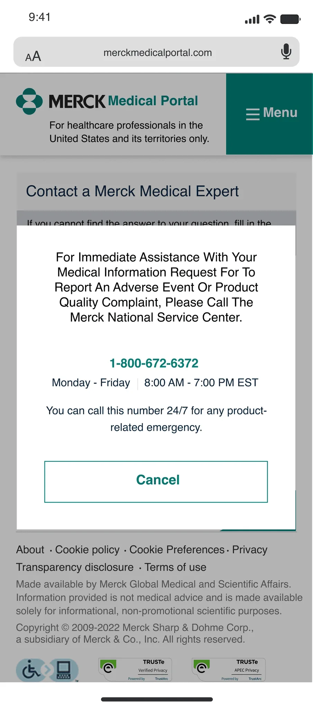
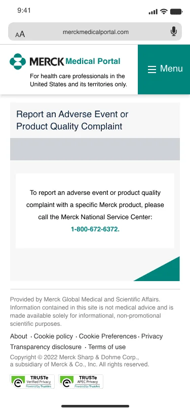
Drag or scroll sideways
Final thoughts.
Takeaways
Looking back, collaboration and user-centricity were at the core of this project.
- 1
User-centric agility
Put user needs first and iterate, so the solution keeps matching what people expect.
- 2
Innovative problem solving
Stay flexible and inventive when challenges appear.
- 3
Stakeholder involvement
Keep collaborating with users and stakeholders for alignment.
Result
85% adoption and steady growth. Up-to-date content across therapy areas helps healthcare professionals make informed decisions and improve patient outcomes.
Next project
Property Advisor